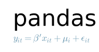

Organização do Curso
Objetivos
Fornecer os conceitos básicos de programação aplicados ao domínio geoespacial.
Aprender como escrever programas que resolvem problemas.
Explorar conceitos de programação através de uma linguagem moderna.
Ensinar técnicas básicas para construção de programas, em especial, para manipulação de dados geoespaciais.
As habilidades/conceitos aprendidos poderão ser levados para qualquer outra linguagem de programação, como R ou C. Portanto, não será apenas um curso de Python!
Para quem é este curso?
O curso é voltado para alunos com pouca ou nenhuma experiência prévia com programação.
Alunos que desejam compreender abordagens computacionais básicas para solução de problemas.
Servirá com uma primeira exposição à arte de programar.
Será preciso muita paciência e perseverança! Programar é uma atividade com uma dificuldade intrínseca. Não basta ler um livro ou assistir às aulas. Será necessário praticar, rodar os exercícios dados em aula, compreender sua execução e a ideia básica por trás deles e fazer as atividades propostas.
Por que a Linguagem Python?
Trata-se de uma linguagem de propósito geral que pode ser utilizada para construção de diversas aplicações.
Grande parte dos elementos presentes nessa linguagem também encontram-se em outras linguagens de programação, o que propicia o reaproveitamento de diversos conceitos.
Linguagem simples de aprender e usar.
Por ser uma linguagem interpretada, facilita seu uso por iniciantes na arte de programação.
Existe um grande número de bibliotecas disponíveis como software livre:
NumPy: Arrays multidimensionais
SciPy: Rotinas numéricas (integração e otimização)
matplotlib: Gráficos e visualização de dados

pandas: Processamento de dados estruturados (tabelas e planilhas)
GDAL/OGR: Camada de abstração de dados geoespaciais
Tópicos da Disciplina
Introdução à Lógica de Programação:
A Linguagem de Programação Python;
Tipos de Dados;
Variáveis e Atribuição;
Leitura de Dados;
Estruturas de Controle;
Sequências e Dicionários;
Funções.
Manipulação e Análise de Dados Matriciais:
Manipulação de arquivos de formato matricial (GeoTIFF);
Transformação entre Sistemas de Referência Espacial;
Recortes e Mosaicos;
Estatísticas Básicas de imagens;
Aritmética de bandas;
Visualização.
Manipulação e Análise de Dados Vetoriais:
Operações Espaciais: distância, área, perímetro, buffer, overlay, relacionamentos topológicos;
Manipulação de arquivos de formato vetorial (ESRI Shapefile, KML, GeoJSON);
Transformação entre sistemas de referência espacial;
Visualização.
Análise Integrada de Dados Matriciais e Vetoriais.
Séries Temporais:
Obtendo séries temporais de serviços Web;
Visualização e análise de séries temporais.
Literate Computing:
Ambientes de Computação Interativa;
Projeto Jupyter;
Criação de Jupyter Notebooks;
Compartilhamento de Jupyter Notebooks.
Organização do Curso
Aulas Teóricas e Práticas.
Listas de exercícios regulares para ajudar a fixar os conceitos aprendidos em sala de aula:
Penalidades por atraso!
Desenvolvimento de um trabalho prático que deverá gerar um produto de dados.
Vocês terão muitas listas de exercícios.
A prática é muito importante em programação!
Vocês devem na medida do possível refazer todos os trechos de códigos apresentados em sala de aula e devem se empenhar ao máximo nas listas de exercícios.
Lembrem-se: não há um substituto para a prática!
Listas especiais com estudos dirigidos para aprofundar o conhecimento em tópicos específicos.
Avaliação
Listas de Exercícios: 20%.
Trabalho Prático e Artigo: 50%.
Prova: 30%.
Nota
Os trabalhos e as listas de exercícios serão realizados em grupos de 04 integrantes.
Código de Honra
Não copiar exercícios dos colegas em hipótese alguma!
Tente contribuir nas listas de exercícios de forma individual.
Discuta com seus colegas somente ideias e conceitos.
Cópias invalidarão a lista tanto de quem copiar quanto de quem ceder a cópia.
Não entregar transcrições literais de material da Internet!
Nota
Utilize o material para inspiração, mas faça seu código a partir dele.
Em caso de dúvidas/dificuldades, procure os professores da disciplina durante os horários apropriados (veja virtual office-hours) ou envie e-mail.
Aonde queremos chegar?
Ao final do curso, esperamos que vocês…
Sejam capazes de expressar a solução de um problema através de uma linguagem de programação.
Tenham aprendido o básico necessário para a criação de pequenos algoritmos na linguagem Python.
Sejam capazes de organizar e compartilhar seus códigos.
Tenham a base necessária para aprofundar os conhecimentos em programação bem como utilizar bibliotecas de apoio à solução de problemas nas teses e dissertações.
☞ Vocês serão bem-vindos a:
CAP-349 – Bancos de Dados Geográficos
CAP-394 – Introdução à Ciência de Dados
CAP-395 – Geoinformática
CAP-423 - Ciência de Dados Geoespaciais
SER-413 – Processamento Digital de Imagens de Sensores Remotos